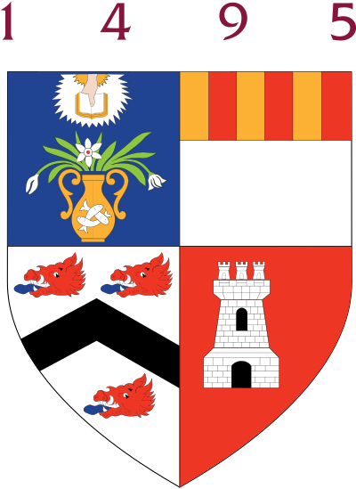
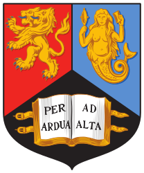

<div class="blurb">
<table style="width:100%">
  <tr>
    <td> </img> </td>
    <td>1998-2002</td>
    <td>BSc in Computing Science, University of Aberdeen, UK (first class) </td>
  </tr>
  <tr>
    <td>  </img>  </td>
    <td>2002-2003 </td>
    <td>MSc in Natural Computation, University of Birmingham, UK (with distinction) </td>
  </tr>
    <tr>
    <td>   </img>  </td>
    <td>2003-2007 </td>
    <td>PhD in Computer Science, University of Birmingham, UK </td>
  </tr>
</table>
</div><!-- /.blurb -->
